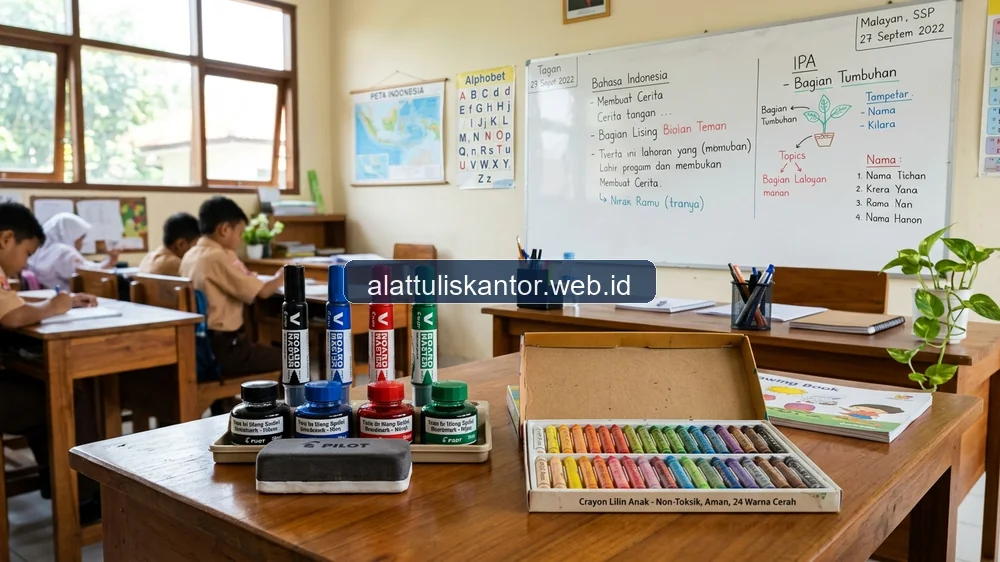

Anggaran ATK kelas yang terus membengkak akibat pembelian spidol whiteboard sekali pakai secara berulang menjadi persoalan umum yang dihadapi banyak sekolah, terutama sekolah dengan jumlah kelas dan jam mengajar yang padat. Beralih ke spidol whiteboard isi ulang (refillable) dapat menjadi solusi signifikan untuk menekan pengeluaran rutin ini, tanpa mengorbankan kualitas tulisan yang dibutuhkan guru selama mengajar.
Selain soal spidol, banyak orang tua dan pihak sekolah juga khawatir bahan pewarna pada krayon yang digunakan siswa mengandung bahan kimia beracun, terutama untuk siswa usia dini yang masih sering memasukkan alat tulis ke mulut secara tidak sengaja. Artikel ini membahas kedua topik tersebut: cara menghemat anggaran kelas dengan spidol whiteboard isi ulang, sekaligus panduan memilih krayon dengan pewarna aman dan non-toksik untuk siswa. ATK Prima Distribusi, sebagai mitra pengadaan ATK sekolah dan kampus terpercaya, menyediakan katalog lengkap alat tulis dan perlengkapan kelas grosir via WhatsApp di 0889-8964-3555.
Fakta: Sekolah dengan 20 kelas aktif dapat menghemat hingga Rp2,5 juta per tahun ajaran hanya dengan beralih dari spidol sekali pakai ke sistem isi ulang.
Ringkasan Hemat Anggaran dengan Spidol Isi Ulang dan Krayon Aman
Spidol whiteboard isi ulang dapat menghemat anggaran kelas hingga 40-50 persen dibanding membeli spidol sekali pakai baru setiap kali tinta habis, karena isi ulang (refill ink) jauh lebih murah dibanding harga spidol baru secara utuh, termasuk mengurangi limbah plastik dari batang spidol yang dibuang. Untuk krayon, pilih produk dengan label 'non-toxic' dan telah memenuhi standar keamanan seperti ASTM D-4236 atau SNI mainan anak, yang menjamin bahan pewarna aman meskipun tertelan dalam jumlah kecil secara tidak sengaja.
Mengapa Spidol Sekali Pakai Membebani Anggaran Sekolah
Spidol whiteboard sekali pakai dirancang untuk dibuang begitu tintanya habis, sehingga sekolah harus terus membeli batang spidol baru secara berkala meskipun mekanisme fisik spidol tersebut (seperti ujung mata spidol dan badan plastik) sebenarnya masih dalam kondisi baik. Biaya berulang ini terakumulasi signifikan sepanjang tahun ajaran, terutama untuk sekolah dengan banyak kelas yang masing-masing membutuhkan beberapa spidol aktif setiap harinya.
Keunggulan Beralih ke Spidol Whiteboard Isi Ulang
1. Biaya Isi Ulang Jauh Lebih Murah dari Spidol Baru
Botol tinta isi ulang untuk spidol whiteboard umumnya berharga sekitar sepertiga hingga setengah dari harga spidol baru utuh, namun dapat digunakan untuk mengisi ulang spidol yang sama beberapa kali sebelum ujung mata spidol perlu diganti.
2. Mengurangi Limbah Plastik di Lingkungan Sekolah
Setiap batang spidol sekali pakai yang dibuang menyumbang limbah plastik yang sulit terurai. Sistem isi ulang secara signifikan mengurangi jumlah sampah plastik yang dihasilkan sekolah setiap tahunnya, sekaligus dapat menjadi bagian dari edukasi kepedulian lingkungan bagi siswa.
3. Kualitas Tulisan Tetap Konsisten
Spidol isi ulang berkualitas baik memberikan hasil tulisan yang sama tajam dan jelas dengan spidol baru, asalkan ujung mata spidol diganti secara berkala sesuai rekomendasi (biasanya setiap 3-5 kali isi ulang tergantung intensitas pemakaian).
Tabel Simulasi Penghematan: Spidol Sekali Pakai vs Isi Ulang
| Skenario | Biaya per Bulan (20 Kelas) | Biaya per Tahun Ajaran |
|---|---|---|
| Spidol sekali pakai (beli baru terus) | Rp600.000 | Rp5.400.000 |
| Spidol isi ulang (refill rutin) | Rp320.000 | Rp2.880.000 |
| Estimasi hemat | ±47% | ±Rp2.520.000/tahun |
Cara Merawat Spidol Isi Ulang agar Lebih Awet
- Tutup rapat spidol segera setelah digunakan untuk mencegah tinta mengering di ujung mata spidol.
- Simpan spidol dalam posisi horizontal, bukan berdiri tegak, agar tinta tidak mengendap di satu sisi.
- Isi ulang tinta sebelum benar-benar habis total untuk menjaga kualitas tulisan tetap konsisten.
- Ganti ujung mata spidol setiap 3-5 kali isi ulang atau ketika tulisan mulai terlihat pudar meski sudah diisi ulang.
Memahami Keamanan Bahan Pewarna Krayon untuk Siswa
Kekhawatiran orang tua dan pihak sekolah terhadap kandungan bahan kimia pada krayon sebenarnya dapat diatasi dengan memilih produk yang telah melalui sertifikasi keamanan resmi. Krayon dengan label 'non-toxic' telah diuji dan dipastikan tidak mengandung bahan berbahaya dalam jumlah yang membahayakan kesehatan, bahkan jika tertelan dalam jumlah kecil secara tidak sengaja oleh siswa usia dini.
Standar Keamanan yang Perlu Diperhatikan pada Kemasan Krayon
- Label 'Non-Toxic' atau 'AP (Approved Product) Certified' dari lembaga pengujian resmi.
- Sertifikasi ASTM D-4236 yang umum digunakan sebagai standar keamanan bahan seni internasional.
- Kesesuaian dengan SNI mainan anak untuk produk yang dipasarkan di Indonesia.
- Hindari krayon tanpa keterangan komposisi bahan sama sekali pada kemasannya.
Studi Kasus: Efisiensi Anggaran SD Cendekia Mulia
SD Cendekia Mulia dengan 24 kelas aktif sebelumnya menghabiskan hampir Rp6 juta per tahun ajaran hanya untuk pembelian spidol whiteboard baru secara rutin. Setelah beralih ke sistem spidol isi ulang dan melatih guru cara merawatnya dengan benar, sekolah berhasil menekan pengeluaran menjadi sekitar Rp3,2 juta per tahun ajaran, sekaligus mengurangi jumlah sampah plastik dari batang spidol bekas secara signifikan. Sekolah tersebut juga beralih menggunakan krayon bersertifikasi non-toxic untuk seluruh siswa kelas rendah, memberikan ketenangan tambahan bagi orang tua terkait keamanan alat tulis yang digunakan anak-anak mereka.
Hasil Nyata: SD Cendekia Mulia mencatat penghematan anggaran ATK kelas hingga 46% dan pengurangan sampah plastik lebih dari 500 batang spidol per tahun setelah beralih ke sistem isi ulang.
Tips Tambahan Mengelola Anggaran ATK Kelas Secara Keseluruhan
Selain spidol dan krayon, terapkan sistem inventaris sederhana untuk memantau pemakaian ATK per kelas setiap bulan, sehingga sekolah dapat mengidentifikasi kelas dengan tingkat pemakaian tidak wajar yang mungkin mengindikasikan pemborosan atau kehilangan barang. Evaluasi berkala terhadap pola pemakaian ini akan membantu penyusunan anggaran ATK yang lebih akurat untuk tahun ajaran berikutnya, sekaligus mengidentifikasi peluang penghematan tambahan di luar spidol dan krayon.
Sekolah juga dapat menunjuk satu koordinator ATK per jenjang yang bertugas memantau kondisi spidol dan alat tulis secara berkala, sekaligus menjadi penghubung antara guru dan bagian pengadaan sekolah ketika stok mulai menipis atau ada kerusakan yang perlu penggantian, sehingga proses pengadaan ulang dapat direncanakan lebih matang tanpa terburu-buru menjelang kebutuhan mendesak melalui paket ATK sekolah lengkap.
Memilih Distributor yang Menyediakan Kedua Kebutuhan Sekaligus
Mengelola pengadaan spidol isi ulang dan krayon bersertifikasi dari dua sumber terpisah dapat menambah kompleksitas administrasi sekolah, terutama untuk sekolah dengan anggaran dan waktu terbatas. Memilih satu distributor yang mampu menyediakan kedua kebutuhan sekaligus, lengkap dengan dokumentasi sertifikasi keamanan produk, dapat menyederhanakan proses pengadaan sekaligus mempermudah proses audit anggaran ATK sekolah setiap akhir tahun ajaran.
Saat mengevaluasi distributor, mintalah contoh sertifikat non-toxic untuk krayon dan spesifikasi teknis sistem isi ulang untuk spidol yang mereka tawarkan melalui layanan konsultasi pengadaan ATK, agar sekolah memiliki dokumentasi lengkap yang dapat ditunjukkan kepada orang tua atau pihak yayasan jika sewaktu-waktu diperlukan sebagai bukti komitmen sekolah terhadap keamanan dan efisiensi anggaran.